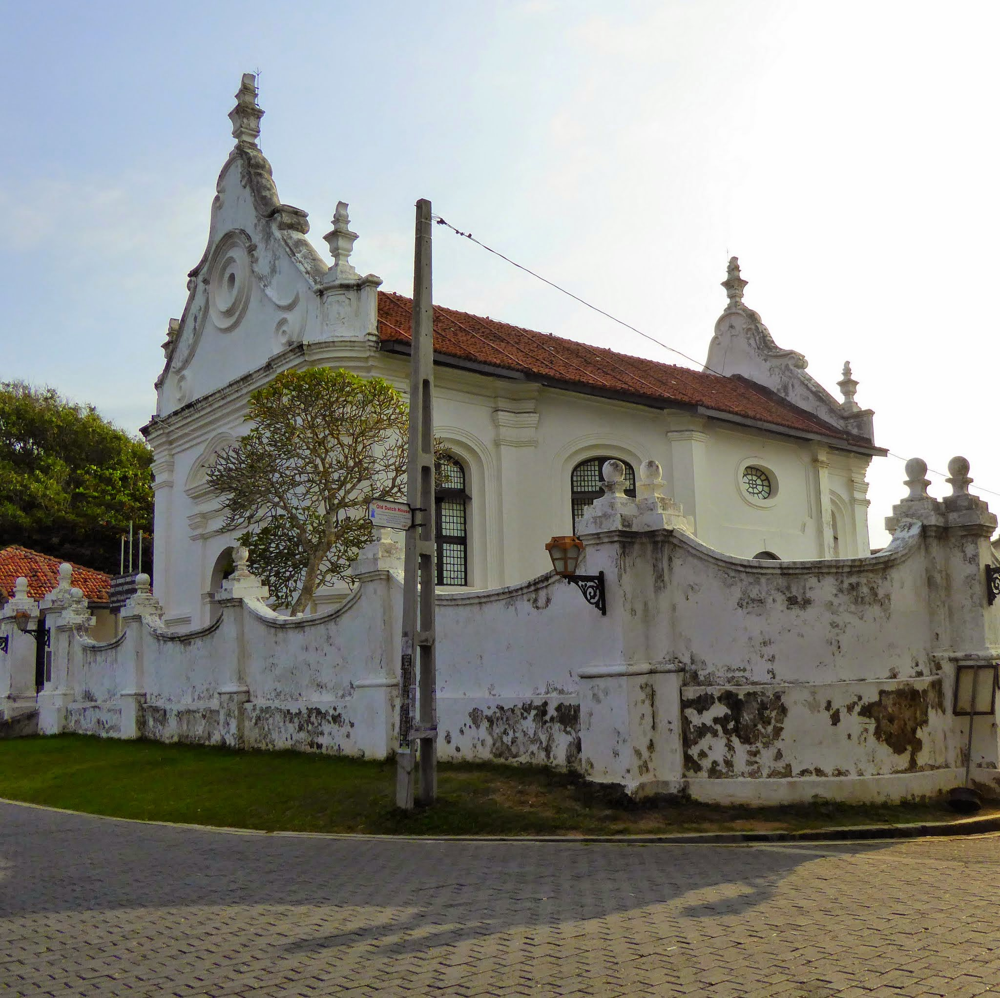

Dutch Reformed Church

The Galle Dutch Reformed Church, also known as the Groote Kerk, is a remarkable architectural gem situated in the heart of Galle, Sri Lanka.
This church, with its elegant Dutch-style architecture and pristine white facade, stands as a prominent landmark within the UNESCO World Heritage
Site of Galle Fort. The construction of the church dates back to the Dutch colonial period, specifically to 1755, making it an essential part of
the city's historical and cultural heritage.
The Galle Dutch Reformed Church played a pivotal role in the lives of Dutch settlers during their colonial rule in Sri Lanka. It served as a place of worship for the Dutch community and their families. The church's construction was a testament to the religious and cultural practices brought by the Dutch to the island. The interior of the church features stunning wooden pews, a grand organ, and intricate Dutch woodwork, showcasing the craftsmanship of the era.
Beyond its religious significance, the Galle Dutch Reformed Church stands as a tangible reminder of Galle's colonial past. The church's architecture reflects the influence of Dutch design and craftsmanship, with elements that hark back to the Netherlands. Its location within the fortified walls of Galle Fort adds to its historical value, as it represents the intersection of different cultures and the architectural evolution of the city.
Today, the Galle Dutch Reformed Church continues to serve as a place of worship for the local Christian community. It also attracts tourists from around the world, who are captivated by its architectural beauty and historical significance.
Next »
« Previous
The Galle Dutch Reformed Church played a pivotal role in the lives of Dutch settlers during their colonial rule in Sri Lanka. It served as a place of worship for the Dutch community and their families. The church's construction was a testament to the religious and cultural practices brought by the Dutch to the island. The interior of the church features stunning wooden pews, a grand organ, and intricate Dutch woodwork, showcasing the craftsmanship of the era.
Beyond its religious significance, the Galle Dutch Reformed Church stands as a tangible reminder of Galle's colonial past. The church's architecture reflects the influence of Dutch design and craftsmanship, with elements that hark back to the Netherlands. Its location within the fortified walls of Galle Fort adds to its historical value, as it represents the intersection of different cultures and the architectural evolution of the city.
Today, the Galle Dutch Reformed Church continues to serve as a place of worship for the local Christian community. It also attracts tourists from around the world, who are captivated by its architectural beauty and historical significance.